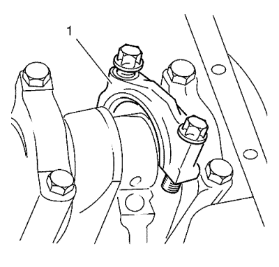
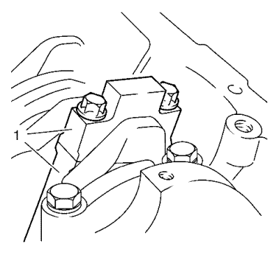
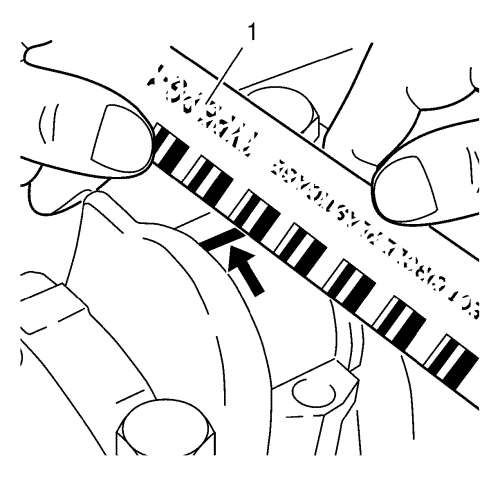

Limpieza e inspección de pistones, bielas y cojinetes
Herramientas especiales
EN-45059 Kit de goniómetro de par de apriete
Si desea informarse sobre herramientas regionales equivalentes, consultar Herramientas especiales .
- Desmonte el cárter de aceite. Consultar Desmontaje del cárter de aceite

- Desmonte el sombrerete del cojinete de biela (1).

| 2.1. | Marque la posición de montaje (1) del sombrerete del cojinete de biela. |
| 2.2. | Retire los dos tornillos. |
| 2.3. | Desengrase el sombrerete del cojinete de biela y unte el clip del cojinete de biela con aceite de motor. |
Nota: No gire el cigüeñal.
- Coloque el plastigage. Consultar Adhesivos, líquidos, lubricantes y selladores
Coloque el plastigage (hilo plástico flexible) en toda la anchura del muñón del cojinete de biela.
- Monte el sombrerete del cojinete de la biela.
Precaución:Consulte Precaución con las fijaciones en la sección Prólogo.
- Apriete los 2 tornillos en tres pasos usando el kit EN-45059:
| 5.1. | Primer paso, apriételos a 35 N·m (26 lib. pie). |
| 5.2. | Segundo paso, apriete otros 45. |
| 5.3. | Tercer paso, apriete otros 15. |
- Desmonte el sombrerete del cojinete de biela (1).
Retire los dos tornillos.

Nota: Al leer el valor, no confunda los milímetros con las pulgadas de la escala de medición (1).
- Mida el juego del cojinete de biela.
| • | Compare la anchura del hilo plástico aplastado con la escala de medición. |
| • | Juego permitido del cojinete de biela: 0,019-0,071 mm (0,0007-0,0028 pulg.). |
Nota: Compruebe las marcas en las piezas.
- Monte el sombrerete del cojinete de la biela.
| • | Unte los clips del muñón del cojinete de biela y del cojinete de biela con aceite de motor. |
- Apriete los 2 tornillos en tres pasos usando el kit EN-45059:
| 9.1. | Primer paso, apriételos a 35 N·m (26 lib. pie) |
| 9.2. | Segundo paso, apriete otros 45. |
| 9.3. | Tercer paso, apriete otros 15. |
- Montar el cárter de aceite. Consultar Montaje del cárter de aceite
| © Copyright Chevrolet. Reservados todos los derechos |